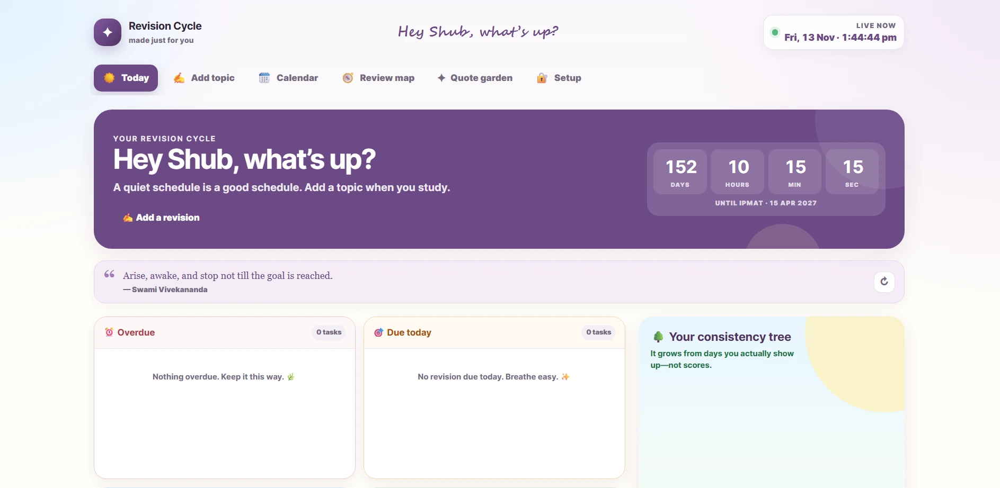
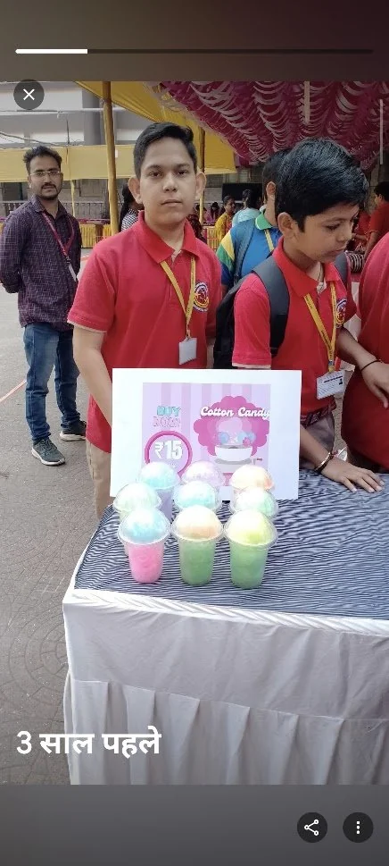
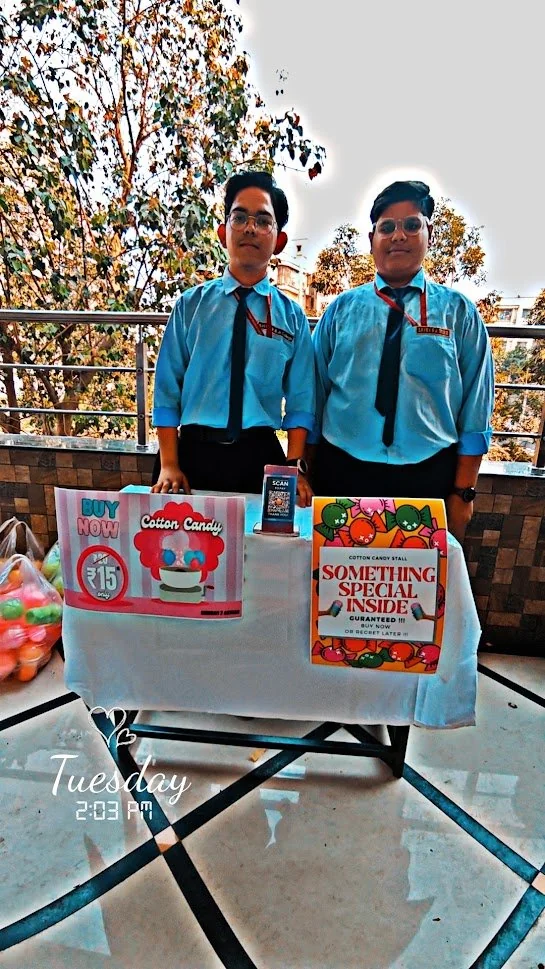
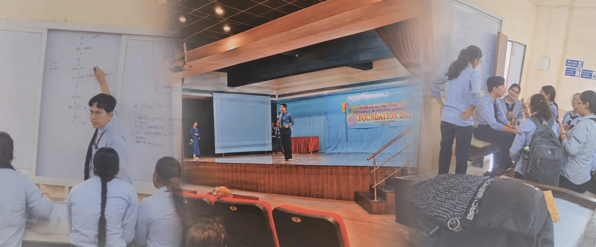
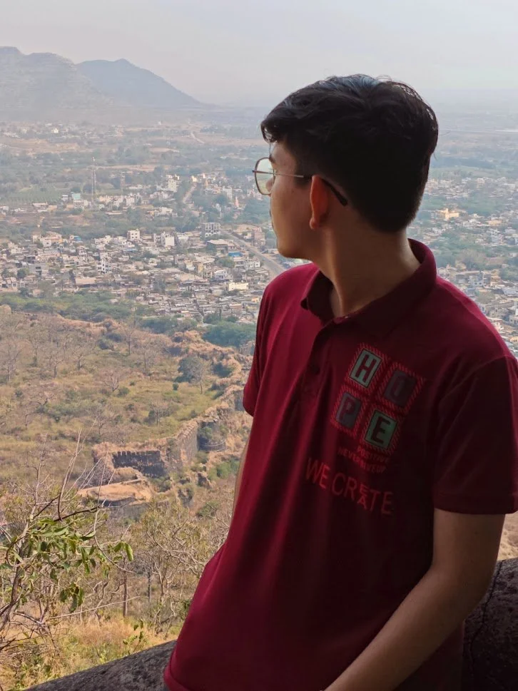

on the court
district-level badminton · third place
Played through injury. A reminder that showing up matters even when the conditions are not perfect.
management student · systems builder · curious by nature
I am Shubham Sharma, a first-year BBA DBE student from Mumbai. I am learning management through practical work, experiments, and the systems behind them.
Let's view more ↘“Sometimes you BECOME what you don't want to be..
But maybe it's the JOURNEY you need to cross to BECOME what you want to be.”
01 · story
I am a first-generation learner from Commerce with Maths. I learn best by doing: trying things, noticing what breaks, and building a better way to do them.
At 12, I started learning video editing with Filmora and KineMaster. What began as freelance work later became a small team with clearer workflows for edits and communication.
I have tried small businesses, led teams during events, made mistakes, and returned with better systems. That is why I am interested in management: understanding people, operations, and what actually works on the ground.
learn by doing. Practical work teaches faster than assumptions.
build what works. Good systems make effort repeatable.
keep giving. Strength grows when you keep showing up for people.
on the court
Played through injury. A reminder that showing up matters even when the conditions are not perfect.
02 · what i bring
I believe in excellence in every action—the small details, preparation, and follow-through that make good work trustworthy.
01
I enjoy breaking a broad problem into smaller moving parts: people, process, timing, and practical reality.
02
I am drawn to recommendations that can actually be carried out, not only ideas that sound good in a presentation.
03
From content work to team coordination, I have learnt that clear communication is part of making any system work.
04
Video editing, graphic design, research, scripting, and delivery have taught me to take an idea from rough brief to finished output.
03 · featured build
personal system · ipmat preparation

open live system ↗A personal revision system built to make returning easy: study once, revisit again n again.
Built for the days when motivation is low but the work still matters.
problem Revision often depends on memory, mood, or last-minute pressure.
system Study once, then return after 24 hours, Day 4, and Day 13.
belief Consistency is not a streak. It is the decision to return.
04 · experience
nov 2022 — dec 2022
At 14, I was selected for a paid graphic-design internship. I created social-media creatives and posters while learning how work moves from a brief to a finished design.
view certificate ↗apr 2022 — may 2022
I produced around 200 short-form product-review videos and handled research, scripting, B-roll, editing, and delivery from end to end.
feb 2022 — mar 2022
I edited and delivered videos during a remote internship, learning how to manage creative work within a structured workflow.
view certificate ↗05 · experiments
01

My first cotton-candy stall barely broke even. It gave me the raw experience that later helped me identify what needed to change.
what it taught metest → observe → rebuild
lesson: an honest first version is still useful data.
tap to see the relaunch ↻
02

I returned with a partner agreement, clearer roles, and a more organised setup. The relaunch made around four to five times the profit.
what changedpartner agreement · clearer roles · tighter setup
lesson: clearer roles → 4–5× profit.
tap to revisit the first version ↻
03
I tried building a clothing brand, got scammed, and lost money. It taught me that preparation, checks, and practical awareness matter before trusting an opportunity.
The venture has since been discontinued.
04

I led six simultaneous team performances at my junior-college Foundation Day event. The work taught me about group dynamics, coordination, and operations under pressure.
lesson: the result depends on the system behind the stage.
06 · path
01
Shree Halari Visa Oswal English Academy & Jr. College · CBSE
02
Shree Halari Visa Oswal English Academy & Jr. College · Maharashtra State Board
03
97 percentile
04
A meaningful milestone before choosing the IIMB BBA DBE path.
05
August 2026 — August 2029 · building a foundation in digital business and entrepreneurship.
06
24 April 2027 · preparing for the next learning opportunity.
07 · philosophy
Give, give, give—and keep giving from empty pockets. When I think there is nothing left, I find deeper pockets: more heart, more love, and more of myself to offer the world.
“धीरे-धीरे रे मना, धीरे सब कुछ होय। माली सींचे सौ घड़ा, ऋतु आए फल होय।”
Slowly, slowly, O mind; everything arrives in its own season.
— Kabir Saheb
08 · contact
09 · a note
The problem is far greater than you think.
It is not poverty or literacy rates, but the lack of will to change our fate.
The problem is you, who will not speak up, who will not take a stand, who hides in a cage and obeys the king.
The problem is me, if I do not put an end to this unjust regime.
Today it is them. Tomorrow it will be me.

I am still learning how to build strength, create opportunity, and use it well for people around me.